Background
Researchers want to assess the effect of captopril on blood pressure of patients with hypertension. They select 15 hypertension patients at random from participants who gave consent to participate in a clinical trial. They measure the systolic and diasystolic blood pressure before and after t reating them with captopril. Hence, we have a randomized complete block (RCB) design with patient as block factor, i.e. every patient serves as its own control.
In this exercise, we will focus only on the systolic blood pressure. Our goal is to determine if the captopril treatment was succesful in lowering the systolic blood pressure.
Load libraries
Data import
captopril <- read.table("https://raw.githubusercontent.com/statOmics/PSLS21/data/captopril.txt",
sep=",",
header=TRUE)
Data exploration
Note that we already explore this dataset in the exercise session on hypothesis testing.
Before we start delving into the data in order to solve our research hypothesis, we first explore the data. Our dataset looks like this;
We have 15 patients, for which we have measure the systolic blood pressure and diastolyic blood pressure, before and after treatment with the captopril drug.
Note that the dataset is not in the tidy format. We could tidy the data using the following code.
captopril <- captopril %>%
gather(type,bp,-id) %>%
filter(type%in%c("SBPa","SBPb")) %>%
mutate(id = as.factor(id), type = as.factor(type))
# we are only interested in the systolic blood pressure
captopril
We can visualize the entire dataframe in an informative way with boxplots;
captopril %>%
ggplot(aes(x=type,y=bp,fill=type)) +
scale_fill_brewer(palette="RdGy") +
theme_bw() +
geom_boxplot(outlier.shape=NA) +
geom_jitter(width = 0.2) +
ggtitle("Boxplot of different blood pressure measures") +
ylab("blood pressure (mmHg)") +
stat_summary(fun.y=mean, geom="point", shape=5, size=3, color="black", fill="black")
## Warning: `fun.y` is deprecated. Use `fun` instead.
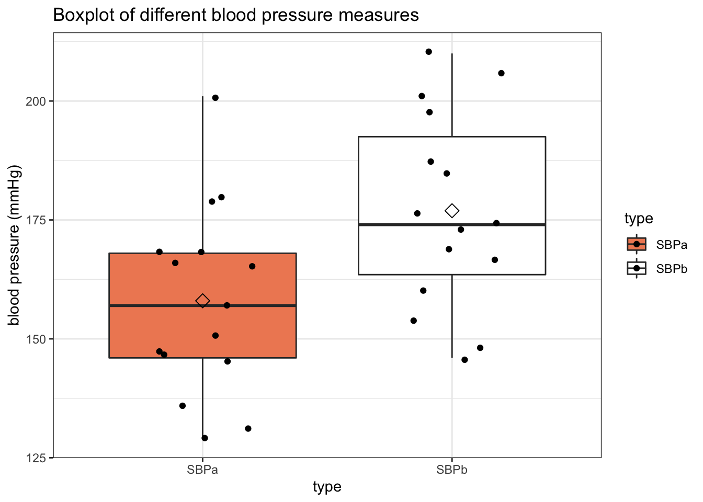
Analysis 1: two-sample t-test
Because we have a pre-test/post-test design we can immediately assess systolic blood pressure differences before and after treatment. We already performed this analysis in the chapter of hypothesis testing.
Hypotheses
\(H0\): On average the systolic blood pressure before and after the captopril treatment are equal.
\(H1\): The average systolic blood pressure after the captopril treatment differs from the average systolic blood pressure before the treatment
Assumptions
The paired t-test has 2 assumptions:
The observations are independent of each other (in both groups)
The data (SBPb and SBPa) must be normally distributed (in both groups)
Additionally, we must check if the variances are similar for both groups. If so, we can use a t-test with a pooled variance (see theory). If not, we must rely on the Welch t-test, which can deal with unequal variances.
The first assumption is met given the experimental design.
Secondly, we assess if the data are normally distributed.
captopril %>%
filter(type == "SBPb") %>%
ggplot(aes(sample=bp)) +
geom_qq() +
geom_qq_line()
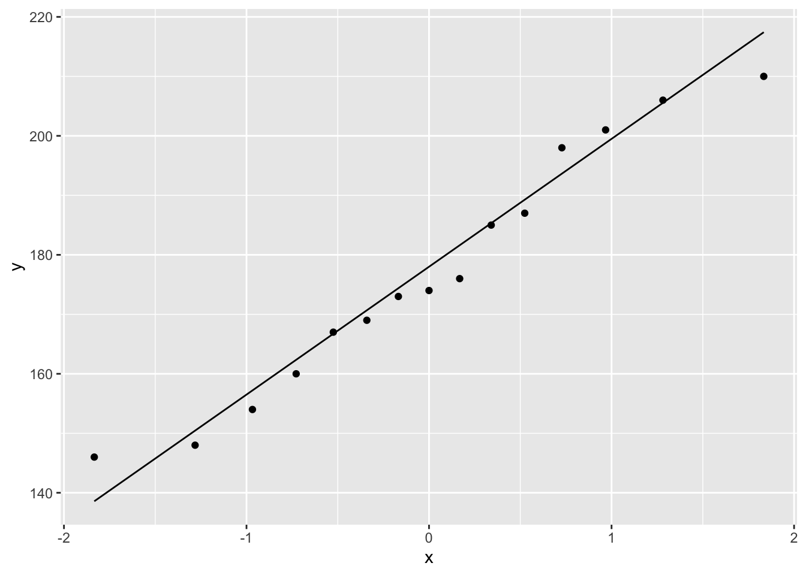
captopril %>%
filter(type == "SBPa") %>%
ggplot(aes(sample=bp)) +
geom_qq() +
geom_qq_line()
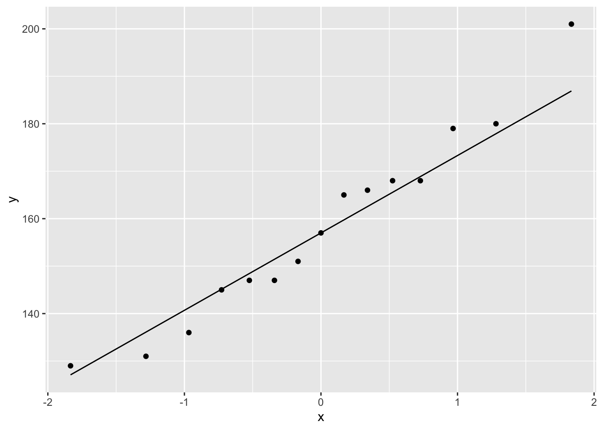
The QQ-plot shows that the values for the systolic blood pressure can be assumed to be normally distributed in both groups.
For the third assumption, we must compare the within-group variability of both groups. We can do this visually with boxplots.
captopril %>%
ggplot(aes(x=type,y=bp,fill=type)) +
scale_fill_brewer(palette="RdGy") +
theme_bw() +
geom_boxplot(outlier.shape=NA) +
geom_jitter(width = 0.2) +
ggtitle("Boxplot of different blood pressure measures") +
ylab("blood pressure (mmHg)") +
stat_summary(fun=mean, geom="point", shape=5, size=3, color="black", fill="black")
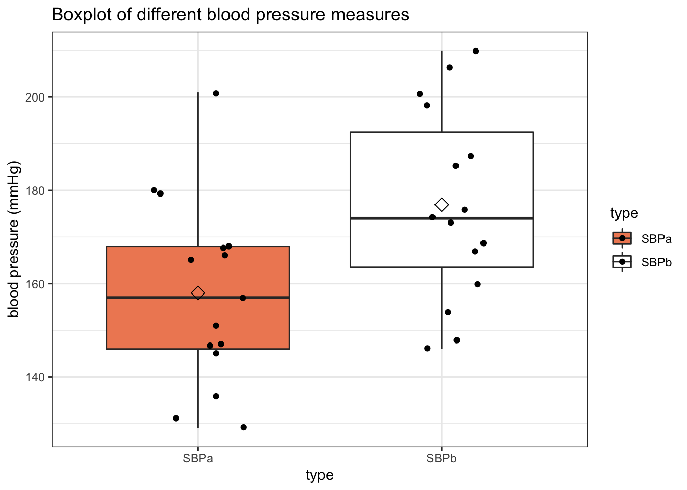
We do not observe large difference in the within-group variability of both groups. Hence, all assumptions for the paired t-test are valid.
Hypothesis testing
ttest <- t.test(captopril %>% filter(type == "SBPb") %>% pull(bp),
captopril %>% filter(type == "SBPa") %>% pull(bp),
paired=TRUE)
ttest
##
## Paired t-test
##
## data: captopril %>% filter(type == "SBPb") %>% pull(bp) and captopril %>% filter(type == "SBPa") %>% pull(bp)
## t = 8.1228, df = 14, p-value = 1.146e-06
## alternative hypothesis: true difference in means is not equal to 0
## 95 percent confidence interval:
## 13.93409 23.93258
## sample estimates:
## mean of the differences
## 18.93333
Note, that the one sample t-test on the difference produces exactly the same result as the paired t-test on the original systolic blood pressure measurements.
There is an extremely significant effect of the captopril treatment on the systolic blood pressure of patients with hypertension. On average, the blood pressure decreases with 18.9 mmHg after treatment with hypertension (95% CI [13.9, 23.9]).
Analysis 2: Linear regression without blocking (incorrect)
Next, we may try to answer the research question using linear regression. However, imagine we perform an analysis that uses type as the only predictor variable for blood pressure. Note that such an analysis does not account for the fact that measurements of the same individual are correlated, hence violating one of the assumptions for linear regression.
lm1 <- lm(bp~type, data=captopril)
plot(lm1)
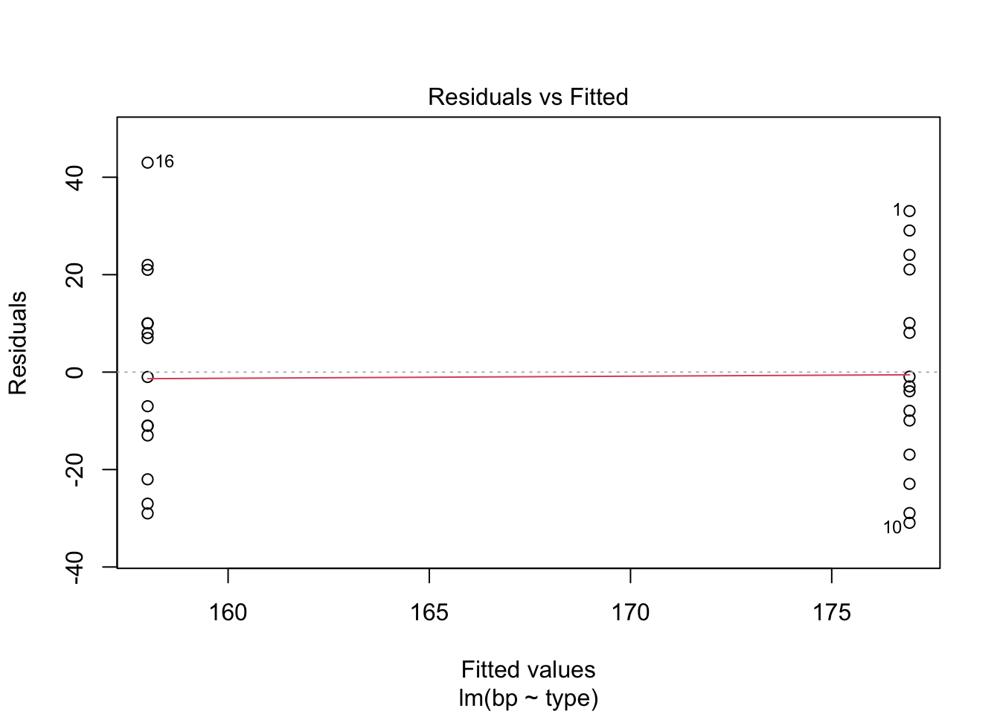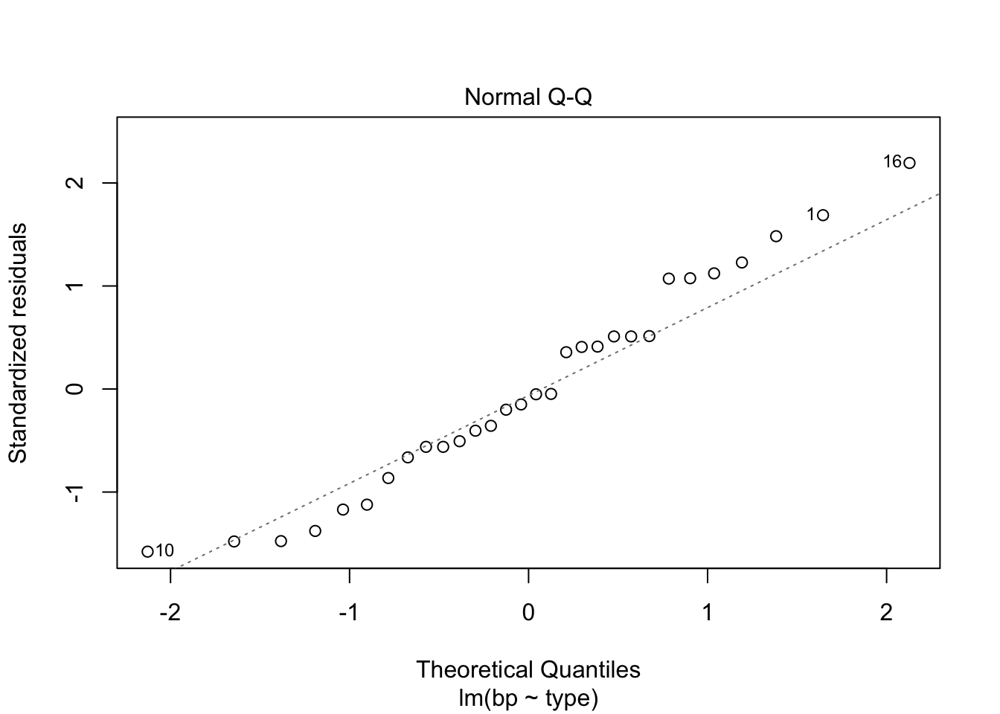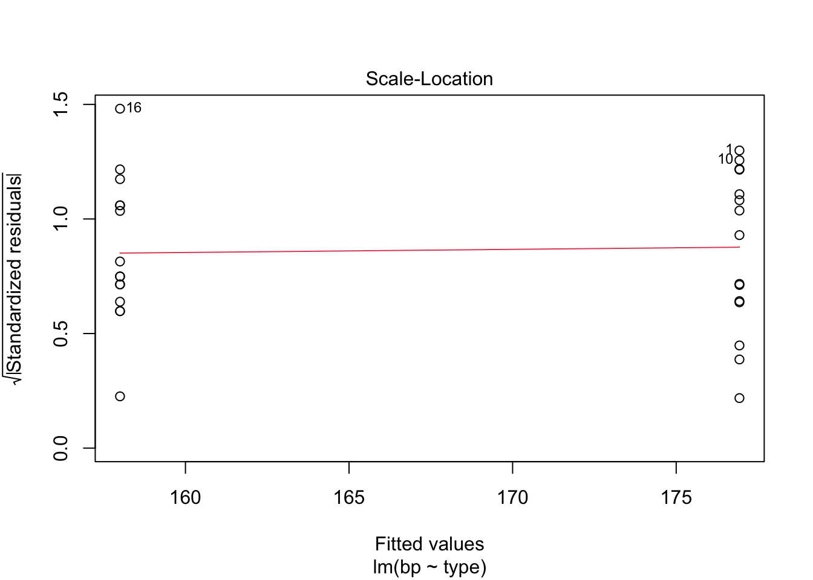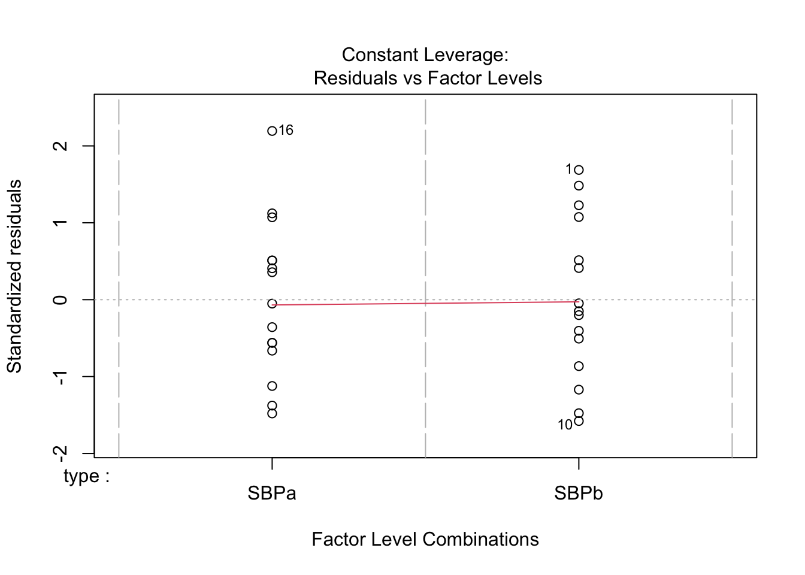
##
## Call:
## lm(formula = bp ~ type, data = captopril)
##
## Residuals:
## Min 1Q Median 3Q Max
## -30.933 -12.500 -1.967 10.050 43.000
##
## Coefficients:
## Estimate Std. Error t value Pr(>|t|)
## (Intercept) 158.000 5.238 30.165 <2e-16 ***
## typeSBPb 18.933 7.408 2.556 0.0163 *
## ---
## Signif. codes: 0 '***' 0.001 '**' 0.01 '*' 0.05 '.' 0.1 ' ' 1
##
## Residual standard error: 20.29 on 28 degrees of freedom
## Multiple R-squared: 0.1892, Adjusted R-squared: 0.1602
## F-statistic: 6.533 on 1 and 28 DF, p-value: 0.0163
Note, that the point estimate for the captopril effect is exactly the same as with the paired t-test (estimate = 18.9)! This is because the design is balanced. The standard error, however, on the captopril effect is wrong in this linear regression model, because both between and within subject variability in the systolic blood pressure are lumped in the error term. Hence, the error term contains the total variability and ignores the fact that systolic blood pressure measurements are correlated.
Analysis 3: Linear regression without blocking (correct)
Here, we adjust the model formula below to analyse the captopril experiment as a randomized complete block design.
lm2 <- lm(bp ~ type+id, data=captopril)
plot(lm2)
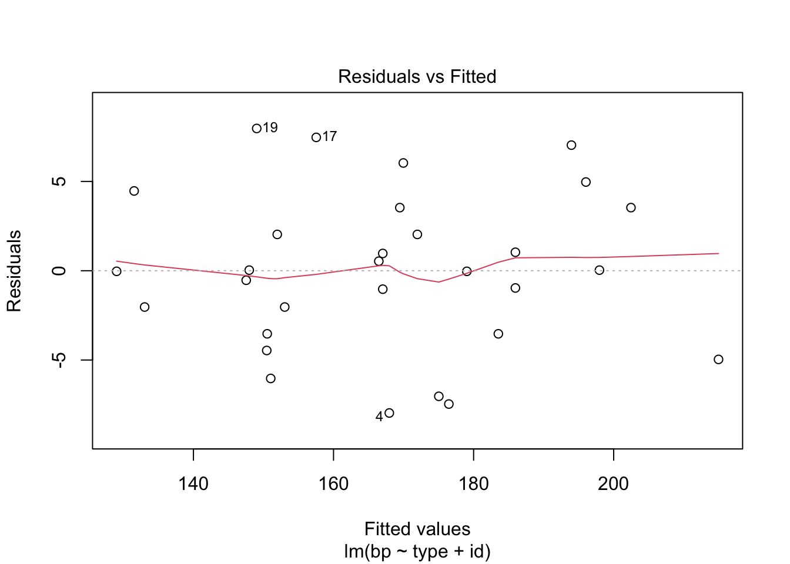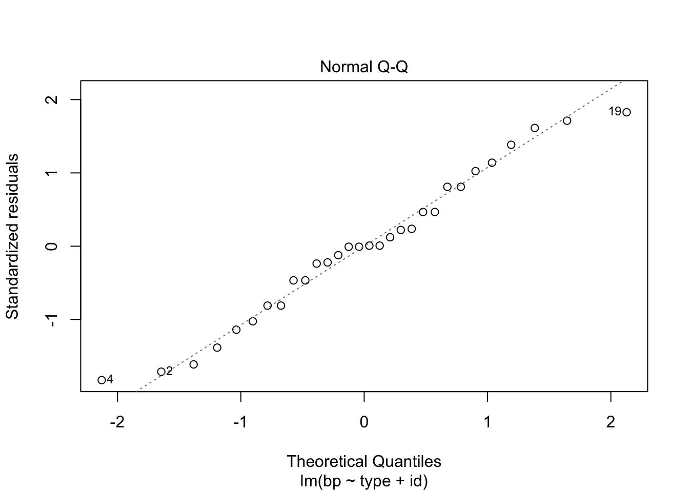 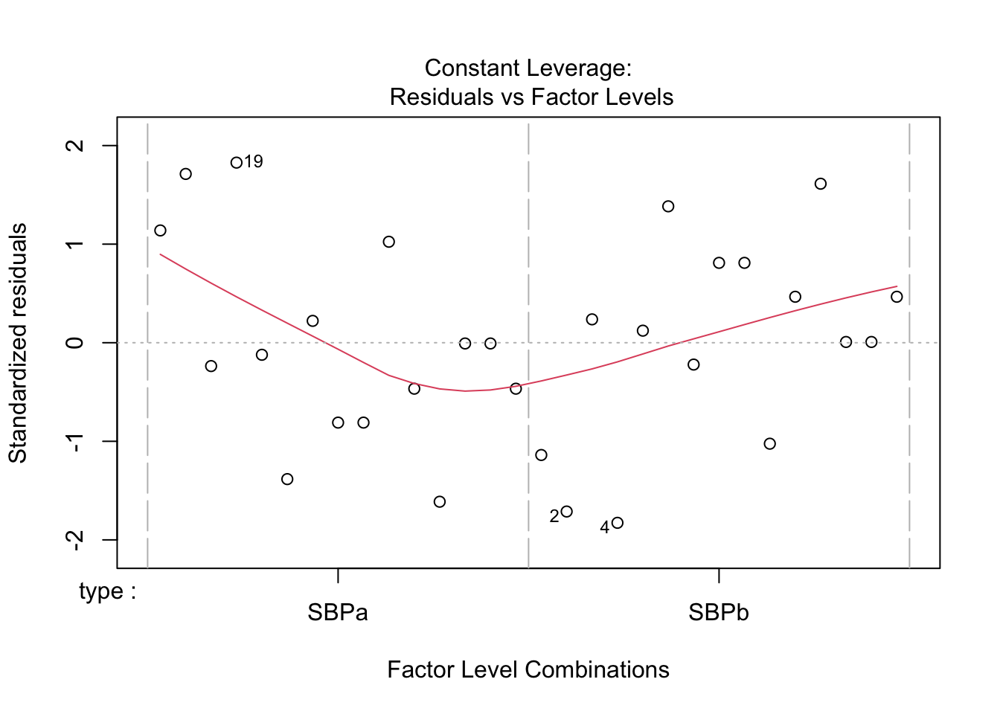
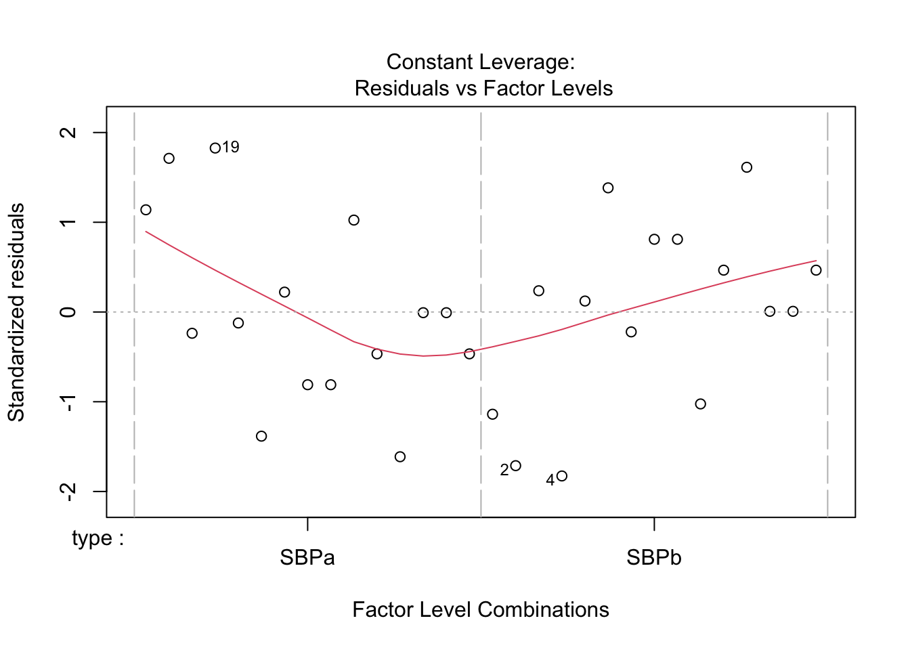
##
## Call:
## lm(formula = bp ~ type + id, data = captopril)
##
## Residuals:
## Min 1Q Median 3Q Max
## -7.967 -3.158 0.000 3.158 7.967
##
## Coefficients:
## Estimate Std. Error t value Pr(>|t|)
## (Intercept) 196.033 4.662 42.051 3.88e-16 ***
## typeSBPb 18.933 2.331 8.123 1.15e-06 ***
## id2 -38.500 6.383 -6.031 3.08e-05 ***
## id3 -29.000 6.383 -4.543 0.00046 ***
## id4 -47.000 6.383 -7.363 3.55e-06 ***
## id5 -48.500 6.383 -7.598 2.48e-06 ***
## id6 -45.000 6.383 -7.050 5.78e-06 ***
## id7 -29.000 6.383 -4.543 0.00046 ***
## id8 -12.500 6.383 -1.958 0.07044 .
## id9 -45.500 6.383 -7.128 5.11e-06 ***
## id10 -64.500 6.383 -10.104 8.21e-08 ***
## id11 -43.000 6.383 -6.736 9.53e-06 ***
## id12 -21.000 6.383 -3.290 0.00537 **
## id13 -17.000 6.383 -2.663 0.01855 *
## id14 -67.000 6.383 -10.496 5.11e-08 ***
## id15 -63.000 6.383 -9.869 1.10e-07 ***
## ---
## Signif. codes: 0 '***' 0.001 '**' 0.01 '*' 0.05 '.' 0.1 ' ' 1
##
## Residual standard error: 6.383 on 14 degrees of freedom
## Multiple R-squared: 0.9599, Adjusted R-squared: 0.9169
## F-statistic: 22.32 on 15 and 14 DF, p-value: 3.26e-07
## Loading required package: carData
##
## Attaching package: 'car'
## The following object is masked from 'package:dplyr':
##
## recode
## The following object is masked from 'package:purrr':
##
## some
Note, that the RCB analysis provides exactly the same results as the paired t-test (p-value for the captopril effect = 1.146e-06). If we look at the error term, we notice that it only captures the within patient variability in systolic blood pressure measurements.
Hence, the RCB analysis is only valid for assessing within block effects.
Note that we need to use the Anova function to obtain type 3 anova results. The anova function in R by default returns type I results which assesses each term in the model sequentially. For balanced designs this is no problem because oth anova results coincide. For unbalanced designs, however, different results can be obtained. Note that there is a huge block effect. Showing that there is a huge variation in the systolic blood pressures between patients.
Conclusion
There is an extremely significant effect of the captopril treatment on the systolic blood pressure of patients with hypertension. On average, the blood pressure decreases with 18.9 mmHg after treatment with hypertension (95% CI [13.9, 23.9]).
LS0tCnRpdGxlOiAiRXhlcmNpc2UgOC54OiBCbG9ja2luZyBvbiB0aGUgY2FwdG9wcmlsIGRhdGFzZXQgLSBzb2x1dGlvbiIgICAKYXV0aG9yOiAiTGlldmVuIENsZW1lbnQgYW5kIEplcm9lbiBHaWxpcyIKZGF0ZTogInN0YXRPbWljcywgR2hlbnQgVW5pdmVyc2l0eSAoaHR0cHM6Ly9zdGF0b21pY3MuZ2l0aHViLmlvKSIgIApvdXRwdXQ6CiAgICBodG1sX2RvY3VtZW50OgogICAgICBjb2RlX2Rvd25sb2FkOiB0cnVlICAgIAogICAgICB0aGVtZTogY29zbW8KICAgICAgdG9jOiB0cnVlCiAgICAgIHRvY19mbG9hdDogdHJ1ZQogICAgICBoaWdobGlnaHQ6IHRhbmdvCiAgICAgIG51bWJlcl9zZWN0aW9uczogdHJ1ZQotLS0KCiMgQmFja2dyb3VuZCAKClJlc2VhcmNoZXJzIHdhbnQgdG8gYXNzZXNzIHRoZSBlZmZlY3Qgb2YgY2FwdG9wcmlsIG9uIGJsb29kIHByZXNzdXJlIG9mIApwYXRpZW50cyB3aXRoIGh5cGVydGVuc2lvbi4gVGhleSBzZWxlY3QgMTUgaHlwZXJ0ZW5zaW9uIHBhdGllbnRzIGF0IHJhbmRvbSBmcm9tIApwYXJ0aWNpcGFudHMgd2hvIGdhdmUgY29uc2VudCB0byBwYXJ0aWNpcGF0ZSBpbiBhIGNsaW5pY2FsIHRyaWFsLiAKVGhleSBtZWFzdXJlIHRoZSBzeXN0b2xpYyBhbmQgZGlhc3lzdG9saWMgYmxvb2QgcHJlc3N1cmUgYmVmb3JlIGFuZCBhZnRlciB0CnJlYXRpbmcgdGhlbSB3aXRoIGNhcHRvcHJpbC4gSGVuY2UsIHdlIGhhdmUgYSByYW5kb21pemVkIGNvbXBsZXRlIGJsb2NrIChSQ0IpIApkZXNpZ24gd2l0aCBwYXRpZW50IGFzIGJsb2NrIGZhY3RvciwgaS5lLiBldmVyeSBwYXRpZW50IHNlcnZlcyBhcyBpdHMgb3duIApjb250cm9sLgoKSW4gdGhpcyBleGVyY2lzZSwgd2Ugd2lsbCBmb2N1cyBvbmx5IG9uIHRoZSBzeXN0b2xpYyBibG9vZCBwcmVzc3VyZS4gT3VyIGdvYWwKaXMgdG8gZGV0ZXJtaW5lIGlmIHRoZSBjYXB0b3ByaWwgdHJlYXRtZW50IHdhcyBzdWNjZXNmdWwgaW4gbG93ZXJpbmcgdGhlCnN5c3RvbGljIGJsb29kIHByZXNzdXJlLgoKTG9hZCBsaWJyYXJpZXMKCmBgYHtyLCBtZXNzYWdlPUZBTFNFLCB3YXJuaW5nPUZBTFNFfQpsaWJyYXJ5KHRpZHl2ZXJzZSkKYGBgCgojIERhdGEgaW1wb3J0CgpgYGB7cn0KY2FwdG9wcmlsIDwtIHJlYWQudGFibGUoImh0dHBzOi8vcmF3LmdpdGh1YnVzZXJjb250ZW50LmNvbS9zdGF0T21pY3MvUFNMUzIxL2RhdGEvY2FwdG9wcmlsLnR4dCIsIAogICAgICAgICAgICAgICAgICAgICAgICBzZXA9IiwiLCAKICAgICAgICAgICAgICAgICAgICAgICAgaGVhZGVyPVRSVUUpCmBgYAoKIyBEYXRhIGV4cGxvcmF0aW9uCgoqKk5vdGUgdGhhdCB3ZSBhbHJlYWR5IGV4cGxvcmUgdGhpcyBkYXRhc2V0IGluIHRoZSBleGVyY2lzZSBzZXNzaW9uIG9uKioKKipoeXBvdGhlc2lzIHRlc3RpbmcuKioKCkJlZm9yZSB3ZSBzdGFydCBkZWx2aW5nIGludG8gdGhlIGRhdGEgaW4gb3JkZXIgdG8gc29sdmUgb3VyIHJlc2VhcmNoIGh5cG90aGVzaXMsCndlIGZpcnN0IGV4cGxvcmUgdGhlIGRhdGEuIE91ciBkYXRhc2V0IGxvb2tzIGxpa2UgdGhpczsKCmBgYHtyfQpoZWFkKGNhcHRvcHJpbCkKYGBgCgpXZSBoYXZlIDE1IHBhdGllbnRzLCBmb3Igd2hpY2ggd2UgaGF2ZSBtZWFzdXJlIHRoZSBzeXN0b2xpYyAKYmxvb2QgcHJlc3N1cmUgYW5kIGRpYXN0b2x5aWMgYmxvb2QgcHJlc3N1cmUsIGJlZm9yZSBhbmQgYWZ0ZXIKdHJlYXRtZW50IHdpdGggdGhlIGNhcHRvcHJpbCBkcnVnLgoKTm90ZSB0aGF0IHRoZSBkYXRhc2V0IGlzIG5vdCBpbiB0aGUgdGlkeSBmb3JtYXQuIFdlIGNvdWxkIHRpZHkgdGhlIGRhdGEgdXNpbmcKdGhlIGZvbGxvd2luZyBjb2RlLgoKYGBge3J9CmNhcHRvcHJpbCA8LSBjYXB0b3ByaWwgJT4lIAogICAgZ2F0aGVyKHR5cGUsYnAsLWlkKSAlPiUKICAgIGZpbHRlcih0eXBlJWluJWMoIlNCUGEiLCJTQlBiIikpICU+JQogICAgbXV0YXRlKGlkID0gYXMuZmFjdG9yKGlkKSwgdHlwZSA9IGFzLmZhY3Rvcih0eXBlKSkKICAgICMgd2UgYXJlIG9ubHkgaW50ZXJlc3RlZCBpbiB0aGUgc3lzdG9saWMgYmxvb2QgcHJlc3N1cmUKY2FwdG9wcmlsCmBgYAoKV2UgY2FuIHZpc3VhbGl6ZSB0aGUgZW50aXJlIGRhdGFmcmFtZSBpbiBhbiBpbmZvcm1hdGl2ZSB3YXkgCndpdGggYm94cGxvdHM7CgpgYGB7cn0KY2FwdG9wcmlsICU+JSAKICBnZ3Bsb3QoYWVzKHg9dHlwZSx5PWJwLGZpbGw9dHlwZSkpICsgCiAgICBzY2FsZV9maWxsX2JyZXdlcihwYWxldHRlPSJSZEd5IikgKwogICAgdGhlbWVfYncoKSArCiAgICBnZW9tX2JveHBsb3Qob3V0bGllci5zaGFwZT1OQSkgKyAKICAgIGdlb21faml0dGVyKHdpZHRoID0gMC4yKSArCiAgICBnZ3RpdGxlKCJCb3hwbG90IG9mIGRpZmZlcmVudCBibG9vZCBwcmVzc3VyZSBtZWFzdXJlcyIpICsKICAgIHlsYWIoImJsb29kIHByZXNzdXJlIChtbUhnKSIpICsgCiAgIHN0YXRfc3VtbWFyeShmdW4ueT1tZWFuLCBnZW9tPSJwb2ludCIsIHNoYXBlPTUsIHNpemU9MywgY29sb3I9ImJsYWNrIiwgZmlsbD0iYmxhY2siKQpgYGAgCgojIEFuYWx5c2lzIDE6IHR3by1zYW1wbGUgdC10ZXN0CgpCZWNhdXNlIHdlIGhhdmUgYSBwcmUtdGVzdC9wb3N0LXRlc3QgZGVzaWduIHdlIGNhbiBpbW1lZGlhdGVseSBhc3Nlc3Mgc3lzdG9saWMgCmJsb29kIHByZXNzdXJlIGRpZmZlcmVuY2VzIGJlZm9yZSBhbmQgYWZ0ZXIgdHJlYXRtZW50LiBXZSBhbHJlYWR5IHBlcmZvcm1lZCB0aGlzCmFuYWx5c2lzIGluIHRoZSBjaGFwdGVyIG9mIGh5cG90aGVzaXMgdGVzdGluZy4KCiMjIEh5cG90aGVzZXMKCiRIMCQ6IE9uIGF2ZXJhZ2UgdGhlIHN5c3RvbGljIGJsb29kIHByZXNzdXJlIGJlZm9yZSBhbmQgYWZ0ZXIgdGhlIGNhcHRvcHJpbCAKdHJlYXRtZW50IGFyZSBlcXVhbC4gCgokSDEkOiBUaGUgYXZlcmFnZSBzeXN0b2xpYyBibG9vZCBwcmVzc3VyZSBhZnRlciB0aGUgY2FwdG9wcmlsIHRyZWF0bWVudCBkaWZmZXJzIApmcm9tIHRoZSBhdmVyYWdlIHN5c3RvbGljIGJsb29kIHByZXNzdXJlIGJlZm9yZSB0aGUgdHJlYXRtZW50CgojIyBBc3N1bXB0aW9ucwoKVGhlIHBhaXJlZCB0LXRlc3QgaGFzIDIgYXNzdW1wdGlvbnM6CgoxLiBUaGUgb2JzZXJ2YXRpb25zIGFyZSBpbmRlcGVuZGVudCBvZiBlYWNoIG90aGVyIChpbiBib3RoIGdyb3VwcykKCjIuIFRoZSBkYXRhIChTQlBiIGFuZCBTQlBhKSBtdXN0IGJlIG5vcm1hbGx5IGRpc3RyaWJ1dGVkIChpbiBib3RoIGdyb3VwcykKCkFkZGl0aW9uYWxseSwgd2UgbXVzdCBjaGVjayBpZiB0aGUgdmFyaWFuY2VzIGFyZSBzaW1pbGFyIGZvciBib3RoIGdyb3Vwcy4KSWYgc28sIHdlIGNhbiB1c2UgYSB0LXRlc3Qgd2l0aCBhIHBvb2xlZCB2YXJpYW5jZSAoc2VlIHRoZW9yeSkuCklmIG5vdCwgd2UgbXVzdCByZWx5IG9uIHRoZSBXZWxjaCB0LXRlc3QsIHdoaWNoIGNhbiBkZWFsIHdpdGgKdW5lcXVhbCB2YXJpYW5jZXMuCgpUaGUgZmlyc3QgYXNzdW1wdGlvbiBpcyBtZXQgZ2l2ZW4gdGhlIGV4cGVyaW1lbnRhbCBkZXNpZ24uCgpTZWNvbmRseSwgd2UgYXNzZXNzIGlmIHRoZSBkYXRhIGFyZSBub3JtYWxseSBkaXN0cmlidXRlZC4KCmBgYHtyfQpjYXB0b3ByaWwgJT4lCiAgZmlsdGVyKHR5cGUgPT0gIlNCUGIiKSAlPiUKICBnZ3Bsb3QoYWVzKHNhbXBsZT1icCkpICsKICBnZW9tX3FxKCkgKwogIGdlb21fcXFfbGluZSgpCgpjYXB0b3ByaWwgJT4lCiAgZmlsdGVyKHR5cGUgPT0gIlNCUGEiKSAlPiUKICBnZ3Bsb3QoYWVzKHNhbXBsZT1icCkpICsKICBnZW9tX3FxKCkgKwogIGdlb21fcXFfbGluZSgpCmBgYAoKVGhlIFFRLXBsb3Qgc2hvd3MgdGhhdCB0aGUgdmFsdWVzIGZvciB0aGUgc3lzdG9saWMgYmxvb2QgcHJlc3N1cmUgY2FuIGJlIGFzc3VtZWQKdG8gYmUgbm9ybWFsbHkgZGlzdHJpYnV0ZWQgaW4gYm90aCBncm91cHMuCgpGb3IgdGhlIHRoaXJkIGFzc3VtcHRpb24sIHdlIG11c3QgY29tcGFyZSB0aGUgd2l0aGluLWdyb3VwIHZhcmlhYmlsaXR5IG9mIGJvdGggCmdyb3Vwcy4gV2UgY2FuIGRvIHRoaXMgdmlzdWFsbHkgd2l0aCBib3hwbG90cy4KCmBgYHtyfQpjYXB0b3ByaWwgJT4lIAogIGdncGxvdChhZXMoeD10eXBlLHk9YnAsZmlsbD10eXBlKSkgKyAKICAgIHNjYWxlX2ZpbGxfYnJld2VyKHBhbGV0dGU9IlJkR3kiKSArCiAgICB0aGVtZV9idygpICsKICAgIGdlb21fYm94cGxvdChvdXRsaWVyLnNoYXBlPU5BKSArIAogICAgZ2VvbV9qaXR0ZXIod2lkdGggPSAwLjIpICsKICAgIGdndGl0bGUoIkJveHBsb3Qgb2YgZGlmZmVyZW50IGJsb29kIHByZXNzdXJlIG1lYXN1cmVzIikgKwogICAgeWxhYigiYmxvb2QgcHJlc3N1cmUgKG1tSGcpIikgKyAKICAgc3RhdF9zdW1tYXJ5KGZ1bj1tZWFuLCBnZW9tPSJwb2ludCIsIHNoYXBlPTUsIHNpemU9MywgY29sb3I9ImJsYWNrIiwgZmlsbD0iYmxhY2siKQpgYGAgCgpXZSBkbyBub3Qgb2JzZXJ2ZSBsYXJnZSBkaWZmZXJlbmNlIGluIHRoZSB3aXRoaW4tZ3JvdXAgdmFyaWFiaWxpdHkgb2YgYm90aCAKZ3JvdXBzLiBIZW5jZSwgYWxsIGFzc3VtcHRpb25zIGZvciB0aGUgcGFpcmVkIHQtdGVzdCBhcmUgdmFsaWQuCgojIyBIeXBvdGhlc2lzIHRlc3RpbmcKCmBgYHtyfQp0dGVzdCA8LSB0LnRlc3QoY2FwdG9wcmlsICU+JSBmaWx0ZXIodHlwZSA9PSAiU0JQYiIpICU+JSBwdWxsKGJwKSwKICAgICAgICAgICAgICAgIGNhcHRvcHJpbCAlPiUgZmlsdGVyKHR5cGUgPT0gIlNCUGEiKSAlPiUgcHVsbChicCksCiAgICAgICAgICAgICAgICBwYWlyZWQ9VFJVRSkKdHRlc3QKYGBgCgpOb3RlLCB0aGF0IHRoZSBvbmUgc2FtcGxlIHQtdGVzdCBvbiB0aGUgZGlmZmVyZW5jZSBwcm9kdWNlcyBleGFjdGx5IHRoZSBzYW1lIApyZXN1bHQgYXMgdGhlIHBhaXJlZCB0LXRlc3Qgb24gdGhlIG9yaWdpbmFsIHN5c3RvbGljIGJsb29kIHByZXNzdXJlIAptZWFzdXJlbWVudHMuIAoKVGhlcmUgaXMgYW4gZXh0cmVtZWx5IHNpZ25pZmljYW50IGVmZmVjdCBvZiB0aGUgY2FwdG9wcmlsIHRyZWF0bWVudCBvbiB0aGUgCnN5c3RvbGljIGJsb29kIHByZXNzdXJlIG9mIHBhdGllbnRzIHdpdGggaHlwZXJ0ZW5zaW9uLiAKT24gYXZlcmFnZSwgdGhlIGJsb29kIHByZXNzdXJlIGRlY3JlYXNlcyB3aXRoIApgciByb3VuZCh1bm5hbWUodHRlc3QkZXN0aW1hdGUpLDEpYCBtbUhnIGFmdGVyIHRyZWF0bWVudCB3aXRoIGh5cGVydGVuc2lvbiAKKDk1JSBDSSBbYHIgIHJvdW5kKHR0ZXN0JGNvbmYuaW50LDEpYF0pLgoKIyBBbmFseXNpcyAyOiBMaW5lYXIgcmVncmVzc2lvbiB3aXRob3V0IGJsb2NraW5nIChpbmNvcnJlY3QpCgpOZXh0LCB3ZSBtYXkgdHJ5IHRvIGFuc3dlciB0aGUgcmVzZWFyY2ggcXVlc3Rpb24gdXNpbmcgbGluZWFyIHJlZ3Jlc3Npb24uCkhvd2V2ZXIsIGltYWdpbmUgd2UgcGVyZm9ybSBhbiBhbmFseXNpcyB0aGF0IHVzZXMgYHR5cGVgIGFzIHRoZSBvbmx5IHByZWRpY3Rvcgp2YXJpYWJsZSBmb3IgYmxvb2QgcHJlc3N1cmUuIE5vdGUgdGhhdCBzdWNoIGFuIGFuYWx5c2lzIGRvZXMgbm90IGFjY291bnQgZm9yIAp0aGUgZmFjdCB0aGF0IG1lYXN1cmVtZW50cyBvZiB0aGUgc2FtZSBpbmRpdmlkdWFsIGFyZSBjb3JyZWxhdGVkLCBoZW5jZSAKdmlvbGF0aW5nIG9uZSBvZiB0aGUgYXNzdW1wdGlvbnMgZm9yIGxpbmVhciByZWdyZXNzaW9uLgoKYGBge3J9CmxtMSA8LSBsbShicH50eXBlLCBkYXRhPWNhcHRvcHJpbCkKcGxvdChsbTEpCmBgYAoKYGBge3J9CnN1bW1hcnkobG0xKQpgYGAKCk5vdGUsIHRoYXQgdGhlIHBvaW50IGVzdGltYXRlIGZvciB0aGUgY2FwdG9wcmlsIGVmZmVjdCBpcyBleGFjdGx5IHRoZSBzYW1lIGFzCndpdGggdGhlIHBhaXJlZCB0LXRlc3QgKGVzdGltYXRlID0gYHIgcm91bmQodW5uYW1lKHR0ZXN0JGVzdGltYXRlKSwxKWApISAKVGhpcyBpcyBiZWNhdXNlIHRoZSBkZXNpZ24gaXMgYmFsYW5jZWQuIFRoZSBzdGFuZGFyZCBlcnJvciwgaG93ZXZlciwgb24gdGhlIApjYXB0b3ByaWwgZWZmZWN0IGlzIHdyb25nIGluIHRoaXMgbGluZWFyIHJlZ3Jlc3Npb24gbW9kZWwsIGJlY2F1c2UgYm90aCBiZXR3ZWVuIAphbmQgd2l0aGluIHN1YmplY3QgdmFyaWFiaWxpdHkgaW4gdGhlIHN5c3RvbGljIGJsb29kIHByZXNzdXJlIGFyZSBsdW1wZWQgaW4gdGhlIAplcnJvciB0ZXJtLiBIZW5jZSwgdGhlIGVycm9yIHRlcm0gY29udGFpbnMgdGhlIHRvdGFsIHZhcmlhYmlsaXR5IGFuZCBpZ25vcmVzIAp0aGUgZmFjdCB0aGF0IHN5c3RvbGljIGJsb29kIHByZXNzdXJlIG1lYXN1cmVtZW50cyBhcmUgY29ycmVsYXRlZC4gCgojIEFuYWx5c2lzIDM6IExpbmVhciByZWdyZXNzaW9uIHdpdGhvdXQgYmxvY2tpbmcgKGNvcnJlY3QpCgpIZXJlLCB3ZSBhZGp1c3QgdGhlIG1vZGVsIGZvcm11bGEgYmVsb3cgdG8gYW5hbHlzZSB0aGUgY2FwdG9wcmlsIGV4cGVyaW1lbnQgYXMgYSAKcmFuZG9taXplZCBjb21wbGV0ZSBibG9jayBkZXNpZ24uCgpgYGB7cn0KbG0yIDwtIGxtKGJwIH4gdHlwZStpZCwgZGF0YT1jYXB0b3ByaWwpCnBsb3QobG0yKQpgYGAKCmBgYHtyfQpzdW1tYXJ5KGxtMikKYGBgCgpgYGB7cn0KbGlicmFyeShjYXIpCkFub3ZhKGxtMiwgdHlwZT0zKQpgYGAKCk5vdGUsIHRoYXQgdGhlIFJDQiBhbmFseXNpcyBwcm92aWRlcyBleGFjdGx5IHRoZSBzYW1lIHJlc3VsdHMgYXMgdGhlIHBhaXJlZCAKdC10ZXN0IChwLXZhbHVlIGZvciB0aGUgY2FwdG9wcmlsIGVmZmVjdCA9IGByIGZvcm1hdCh0dGVzdCRwLnZhbHVlLGRpZ2l0cz00KWApLiAKSWYgd2UgbG9vayBhdCB0aGUgZXJyb3IgdGVybSwgd2Ugbm90aWNlIHRoYXQgaXQgb25seSBjYXB0dXJlcyB0aGUgd2l0aGluIHBhdGllbnQgCnZhcmlhYmlsaXR5IGluIHN5c3RvbGljIGJsb29kIHByZXNzdXJlIG1lYXN1cmVtZW50cy4gCgoqKkhlbmNlLCB0aGUgUkNCIGFuYWx5c2lzIGlzIG9ubHkgdmFsaWQgZm9yIGFzc2Vzc2luZyB3aXRoaW4gYmxvY2sgZWZmZWN0cy4qKgoKTm90ZSB0aGF0IHdlIG5lZWQgdG8gdXNlIHRoZSBgQW5vdmFgIGZ1bmN0aW9uIHRvIG9idGFpbiB0eXBlIDMgYW5vdmEgcmVzdWx0cy4gClRoZSBhbm92YSBmdW5jdGlvbiBpbiBSIGJ5IGRlZmF1bHQgcmV0dXJucyB0eXBlIEkgcmVzdWx0cyB3aGljaCBhc3Nlc3NlcyBlYWNoIAp0ZXJtIGluIHRoZSBtb2RlbCBzZXF1ZW50aWFsbHkuIEZvciBiYWxhbmNlZCBkZXNpZ25zIHRoaXMgaXMgbm8gcHJvYmxlbSBiZWNhdXNlIApvdGggYW5vdmEgcmVzdWx0cyBjb2luY2lkZS4gRm9yIHVuYmFsYW5jZWQgZGVzaWducywgaG93ZXZlciwgZGlmZmVyZW50IHJlc3VsdHMgCmNhbiBiZSBvYnRhaW5lZC4gTm90ZSB0aGF0IHRoZXJlIGlzIGEgaHVnZSBibG9jayBlZmZlY3QuIFNob3dpbmcgdGhhdCB0aGVyZSBpcyAKYSBodWdlIHZhcmlhdGlvbiBpbiB0aGUgc3lzdG9saWMgYmxvb2QgcHJlc3N1cmVzIGJldHdlZW4gcGF0aWVudHMuCgojIyBDb25jbHVzaW9uCgpUaGVyZSBpcyBhbiBleHRyZW1lbHkgc2lnbmlmaWNhbnQgZWZmZWN0IG9mIHRoZSBjYXB0b3ByaWwgdHJlYXRtZW50IG9uIHRoZSAKc3lzdG9saWMgYmxvb2QgcHJlc3N1cmUgb2YgcGF0aWVudHMgd2l0aCBoeXBlcnRlbnNpb24uIApPbiBhdmVyYWdlLCB0aGUgYmxvb2QgcHJlc3N1cmUgZGVjcmVhc2VzIHdpdGggCmByIHJvdW5kKHVubmFtZSh0dGVzdCRlc3RpbWF0ZSksMSlgIG1tSGcgYWZ0ZXIgdHJlYXRtZW50IHdpdGggaHlwZXJ0ZW5zaW9uIAooOTUlIENJIFtgciAgcm91bmQodHRlc3QkY29uZi5pbnQsMSlgXSkuCgojIENvbmNsdWRpbmcgcmVtYXJrcwoKV2UgaGF2ZSBzaG93biB0aGF0IAogIAotIFRoZSBjYXB0b3ByaWwgZGVzaWduIGNhbiBiZSBjb3JyZWN0bHkgYW5hbHlzZWQgdXNpbmcgYSBwYWlyZWQgdC10ZXN0IG9yIAp3aXRoIGEgbGluZWFyIG1vZGVsIHdpdGggYSBibG9ja2luZyBmYWN0b3IgZm9yIHBhdGllbnQuIAoKLSBJbiBleHBlcmltZW50YWwgZGVzaWduLCB3ZSBjYW4gYWZmZWN0IHRoZSBwcmVjaXNpb24gb2Ygb3VyIGVzdGltYXRlcyBieSAKICAgIAogICAgMS4gSW5jcmVhc2luZyB0aGUgc2FtcGxlIHNpemUKICAgIDIuIEJsb2NraW5nIHRvIGlzb2xhdGUgc291cmNlcyBvZiB2YXJpYWJpbGl0eSBmcm9tIHRoZSBleHBlcmltZW50IAoKUmVzZWFyY2hlcnMgY291bGQgZnVydGhlciBpbXByb3ZlIHRoZSBkZXNpZ24gYnkgdXNpbmcgYSBwcm9wZXIgY29udHJvbCAKdHJlYXRtZW50LiBJbiB0aGUgY3VycmVudCBwcmUtdGVzdC9wb3N0LXRlc3QgZGVzaWduIHRoZSBibG9vZCBwcmVzc3VyZSBvZiAKcGF0aWVudHMgY291bGQgaGF2ZSBkcm9wcGVkIGR1ZSB0byBhIHBsYWNlYm8gZWZmZWN0LiBTbyByZXNlYXJjaGVycyBjYW4gb25seSAKY29uY2x1ZGUgdGhhdCB0aGVyZSBpcyBhbiBleHRyZW1lbHkgc2lnbmlmaWNhbnQgZWZmZWN0IGZyb20gYWRtaW5pc3RlcmluZyAKY2FwdG9wcmlsIHRvIHBhdGllbnRzIHdpdGggaHlwZXJ0ZW5zaW9uLiBUaGV5IGNhbm5vdCBhc3NpZ24gdGhlIGVmZmVjdCB0byB0aGUgCm1vZGUgb2YgYWN0aW9uIG9mIHRoZSBkcnVnLiBJbiBvcmRlciB0byBkcmF3IGNhdXNhbCBjb25jbHVzaW9ucyB0aGV5IHNob3VsZCAKaGF2ZSByYW5kb21pemVkIHRoZSBwYXRpZW50cyBpbiB0d28gZ3JvdXBzOiBvbmUgZ3JvdXAgdGhhdCByZWNlaXZlcyBjYXB0b3ByaWwgCmFuZCBhbm90aGVyIGdyb3VwIHRoYXQgcmVjZWl2ZXMgYSBwbGFjZWJvLiBBZ2FpbiBibG9vZCwgcHJlc3N1cmVzIApiZWZvcmUgYW5kIGFmdGVyIHRoZSB0cmVhdG1lbnQgc2hvdWxkIGJlIHVzZWQgdG8gaXNvbGF0ZSB0aGUgcGF0aWVudCB0byBwYXRpZW50IAp2YXJpYXRpb24gaW4gdGhlIHN5c3RvbGljIGJsb29kIHByZXNzdXJlcyBmcm9tIHRoZSBhbmFseXNpcy4gCgoKCgo=